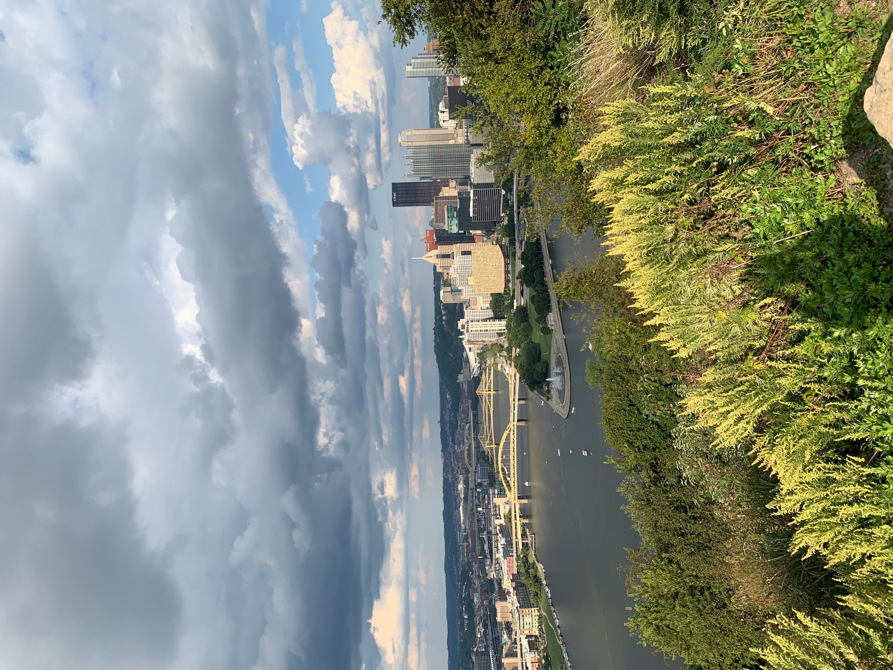
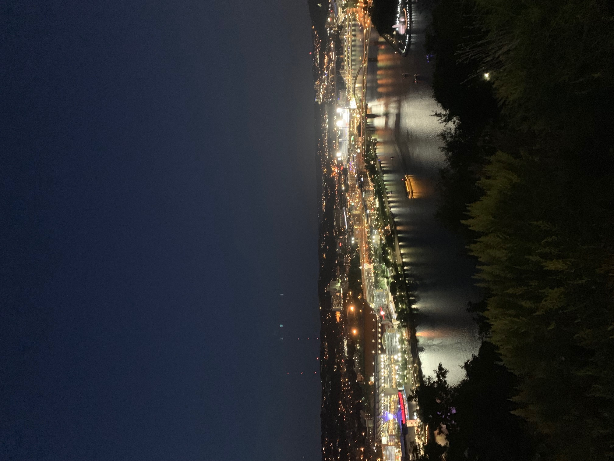

Of course, Pittsburgh has been where I've spent most of my time for the past 4 years. While the weather may not always be great, Pittsburgh is an amazing and diverse city that I'm happy to call home. Pittsburgh has a little bit of everything, from the bustling downtown area to the relaxing and massive Shenley park. Mount Washington offers great food and views of the whole city. Pitt's campus is also home to some nice views, first and foremost being the Cathedral of Learning. You can also stop by the North Shore to see our several professional sports stadiums, or go to South Side for drinks on Carson Street!
 